Browse reduced photometry products for a target, and configure and launch new reductions with the prose pipeline.
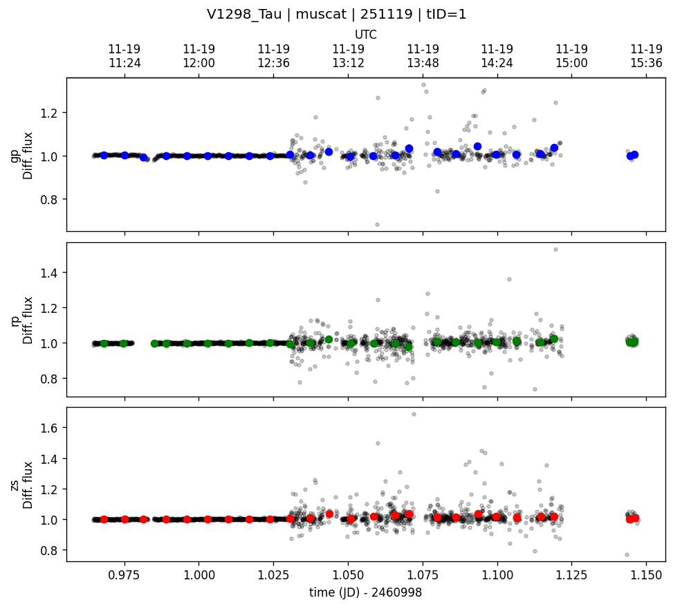
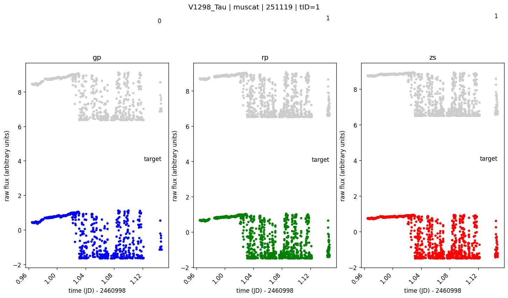
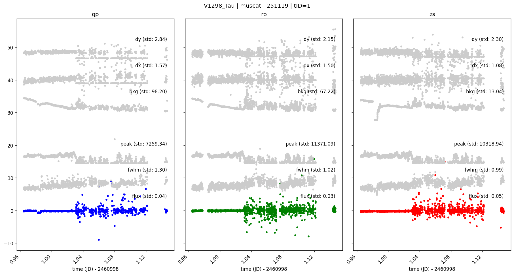
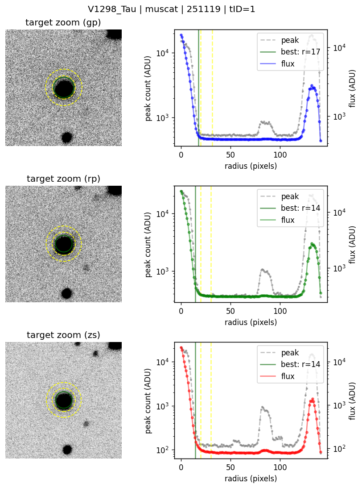
No nearby stars within the outer annulus detected in Gaia.
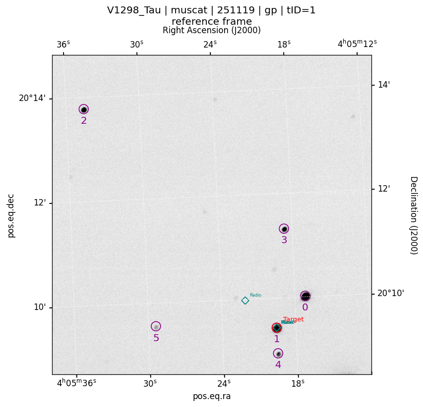
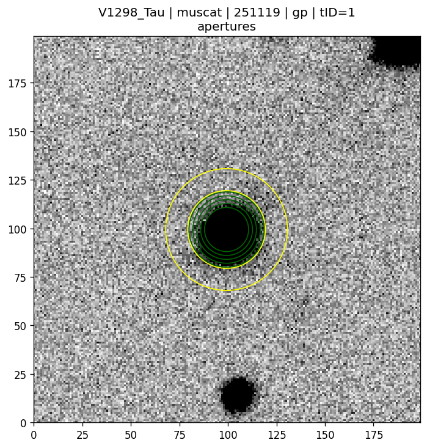
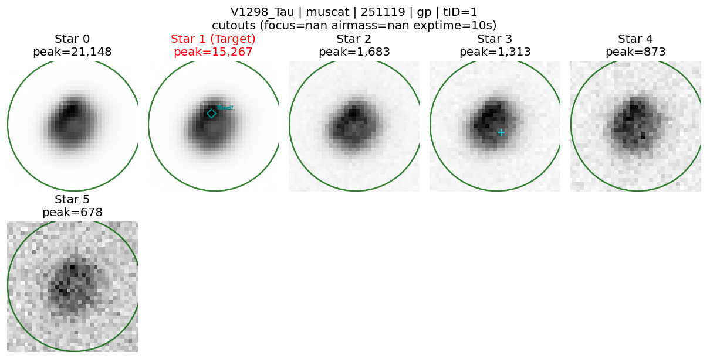
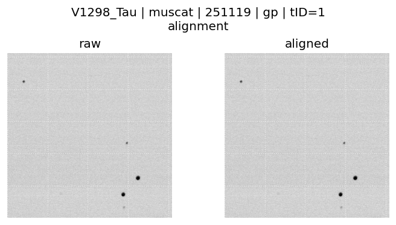
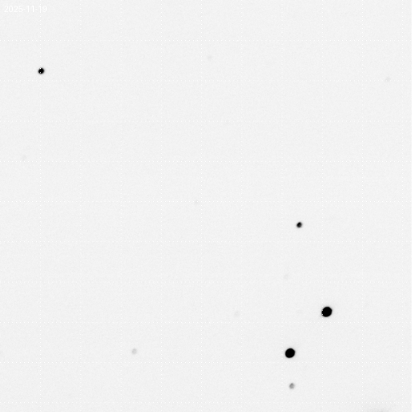
| BJD_TDB | Flux | Err | Bkg(ADU) | Airmass | Dx(pix) | Dy(pix) | Peak(ADU) | FWHM(pix) | GJD_UTC |
|---|---|---|---|---|---|---|---|---|---|
| 2460998.97106853 | 0.9960927228743399 | 0.0012689426247057321 | 459.51067606608075 | 0.536137136198909 | 4.631500681959821 | 15266.58203125 | 11.361279994948976 | 2460998.964630853 | |
| 2460998.971194949 | 0.9993766982535683 | 0.0012678239110735898 | 461.2932662963867 | -0.6742124707158054 | 4.356442488226944 | 14767.3115234375 | 11.525580215908459 | 2460998.9647572706 | |
| 2460998.97132136 | 1.0046383005861745 | 0.001268645605516491 | 463.0124028523763 | 0.13464401901314876 | 4.610824289456886 | 14881.228515625 | 12.06220851481813 | 2460998.9648836805 | |
| 2460998.971448118 | 1.0050886439236228 | 0.0012664352929806434 | 463.0729700724284 | 1.035218264483419 | 4.313618013388216 | 15901.39453125 | 11.205503382020403 | 2460998.9650104367 | |
| 2460998.971574552 | 0.9988364627220949 | 0.0012657943511262077 | 466.82064056396484 | 1.054355040585217 | 4.69901584342302 | 14089.5771484375 | 12.13550310909752 | 2460998.9651368693 | |
| 2460998.9717009617 | 1.0027291083883285 | 0.0012686921946634248 | 467.78990936279297 | 1.7114528087549612 | 5.585787496033547 | 14737.9580078125 | 11.621426641784977 | 2460998.9652632778 | |
| 2460998.9718274 | 1.003560898891723 | 0.0012657309054994845 | 461.4597676595052 | 1.1019750063943197 | 5.151104171260403 | 16079.6435546875 | 11.380212062724667 | 2460998.965389715 | |
| 2460998.9719538265 | 1.0032626869054213 | 0.0012662623245172698 | 462.97945912679035 | 1.1851774085219835 | 4.420392539155825 | 15634.2646484375 | 11.394539024300466 | 2460998.96551614 |
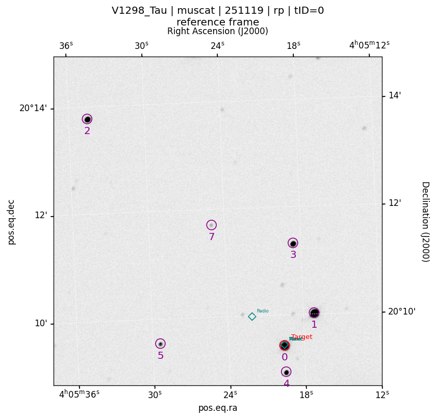
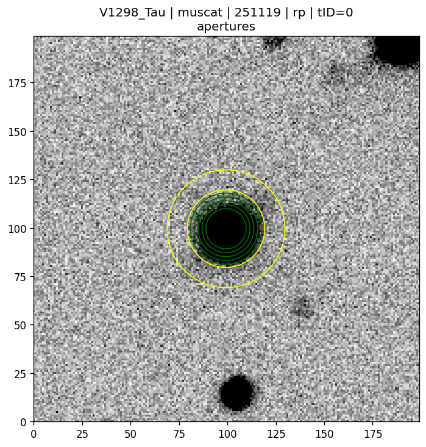
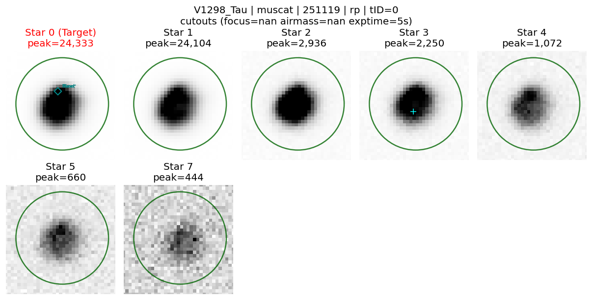
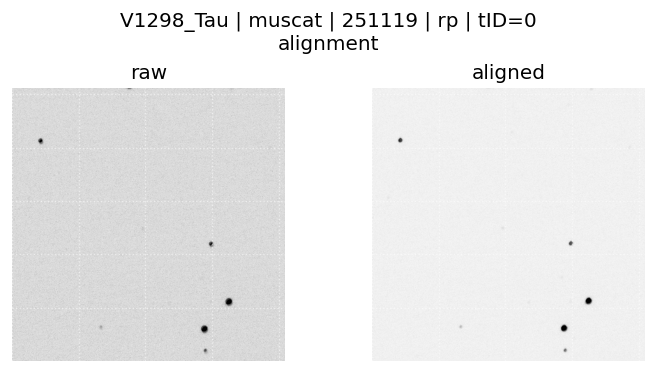
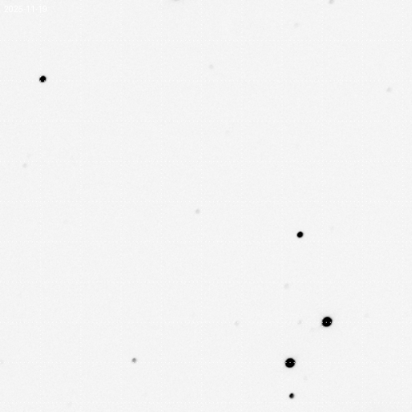
| BJD_TDB | Flux | Err | Bkg(ADU) | Airmass | Dx(pix) | Dy(pix) | Peak(ADU) | FWHM(pix) | GJD_UTC |
|---|---|---|---|---|---|---|---|---|---|
| 2460998.971084673 | 0.987475262159631 | 0.0013183414688279287 | 301.41747093200684 | 1.808680678587154 | 0.1260260531600647 | 24333.337890625 | 10.390399780216045 | 2460998.964646996 | |
| 2460998.971153549 | 0.9996214442705658 | 0.0013189054037700209 | 302.6059284210205 | -1.1704357567279342 | 2.3164858265429893 | 21984.921875 | 10.583987703816172 | 2460998.964715871 | |
| 2460998.971222391 | 1.0031648337162824 | 0.0013165511845784925 | 302.6145210266113 | -2.080099854999012 | 1.1568269643663955 | 23841.029296875 | 10.46396373419551 | 2460998.9647847125 | |
| 2460998.9712912375 | 0.9909719396534872 | 0.0013164593782748954 | 302.9922676086426 | -0.4227224443277803 | 2.203326415420155 | 23047.888671875 | 11.107720260117771 | 2460998.964853558 | |
| 2460998.9713600464 | 1.0028772610631322 | 0.001315107971723127 | 300.6911087036133 | -1.3323304202481618 | 1.4612435784473192 | 25040.8515625 | 11.11386524616076 | 2460998.964922366 | |
| 2460998.9714288646 | 0.9975368940608795 | 0.0013143582541118263 | 300.4109992980957 | 0.1278336808364563 | -0.6259724266796458 | 25267.474609375 | 11.03098785831174 | 2460998.964991184 | |
| 2460998.9714977094 | 1.0042575345108495 | 0.001313643388772054 | 301.0786418914795 | 1.5577152094999762 | 0.805878659369942 | 25490.041015625 | 10.506988122130034 | 2460998.965060028 | |
| 2460998.9715665127 | 0.9936623733026476 | 0.0013121979853283725 | 305.30189514160156 | -1.3381422389910942 | 2.7960466908527346 | 22702.728515625 | 11.217535166221483 | 2460998.9651288306 |
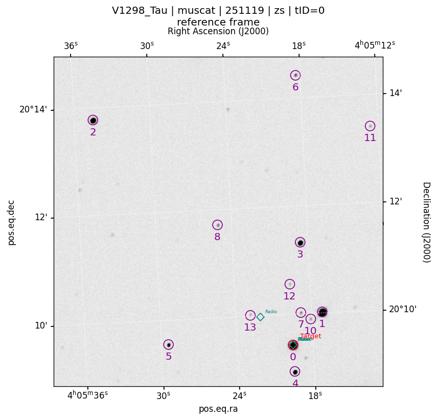
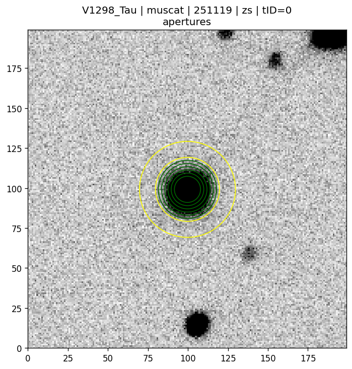
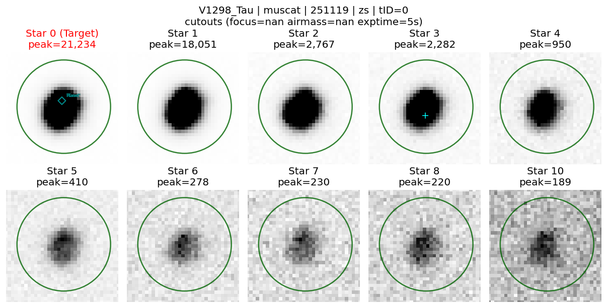
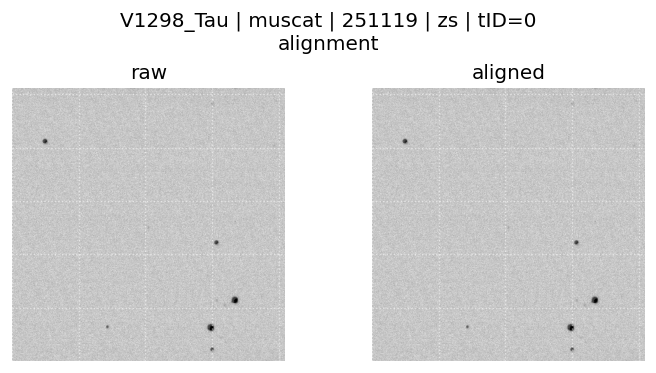
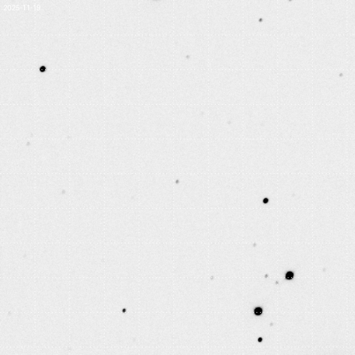
| BJD_TDB | Flux | Err | Bkg(ADU) | Airmass | Dx(pix) | Dy(pix) | Peak(ADU) | FWHM(pix) | GJD_UTC |
|---|---|---|---|---|---|---|---|---|---|
| 2460998.9710853817 | 0.9892440127795479 | 0.0017887243784374634 | 77.01973560878209 | -0.939836675247094 | 1.802895124158268 | 21234.203125 | 8.58921922668022 | 2460998.9646477047 | |
| 2460998.9711541855 | 0.9974566678956736 | 0.0017907131255369916 | 77.50365883963448 | -0.8783765659991626 | 2.358808261038675 | 19268.046875 | 8.679166550728421 | 2460998.9647165076 | |
| 2460998.971222942 | 1.004654261889669 | 0.0017865544489384174 | 76.96322577340263 | -1.1324447123302221 | 2.3668943708853116 | 21023.865234375 | 8.88791187373754 | 2460998.964785264 | |
| 2460998.9712917185 | 0.9908272584571403 | 0.0017857081523775151 | 76.96470587594169 | -0.7342866725182815 | 3.344423388535502 | 19859.712890625 | 9.248753430745905 | 2460998.9648540393 | |
| 2460998.971360485 | 1.0035155358594847 | 0.0017855571331721646 | 78.16329642704555 | -0.8919959708212815 | 1.6339178973200021 | 22115.431640625 | 9.093103318247682 | 2460998.964922805 | |
| 2460998.9714292604 | 0.9983913900481397 | 0.0017850374518941815 | 77.587648664202 | -1.6493468027448783 | 1.7552413251447327 | 22811.27734375 | 8.623149900692338 | 2460998.9649915798 | |
| 2460998.9714980368 | 0.9998840878233023 | 0.0017852958325113957 | 77.40854031699044 | -0.9372366448080446 | 2.2268064929791147 | 22576.21875 | 8.58553204322265 | 2460998.965060355 | |
| 2460998.971566818 | 0.9938205152081164 | 0.001782865529855742 | 77.98408276694161 | -0.6091463448758471 | 2.3601240742642924 | 20876.373046875 | 9.260575869882596 | 2460998.965129136 |
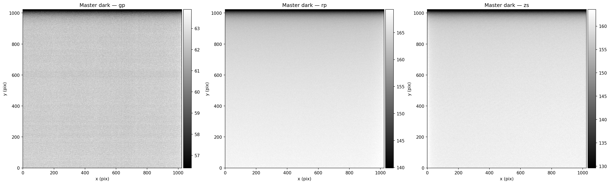
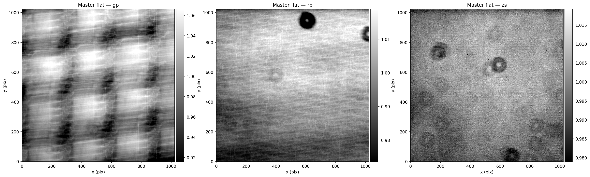
Both use the options above; the test run limits frames per band.
Or copy & run the command in the terminal:
~/miniconda3/envs/prose/bin/python -m prose.scripts.run_photometry --target_name V1298_Tau --data_dir /data/MuSCAT/251119 --results_dir ~/ql/prose/muscat/251119/_runs/V1298_Tau/default --bands gp rp ip zs --avoid_nearby_star --calib_dir ~/ql/prose/muscat/251119_calibrated --gif --plot_gaia_sources --verbose --overwrite
Delete reduction files
Delete all reduction products for V1298_Tau (muscat/251119)? This cannot be undone.
@help for commands, @here to share this page, @name to notify someone, or @bot to ask the assistant privately.